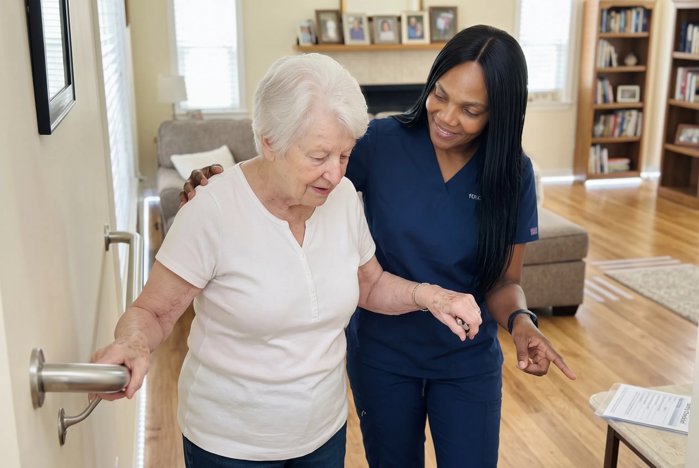

When the Gaps Between Visits Become the Problem
There is a point at which visiting care stops working. Not because the visits are poor, but because the risk sits in the hours between them — the nights, the early mornings, the unwitnessed attempt to get to the bathroom alone.
For families, this is usually the stage where someone has stopped sleeping properly. A daughter listening for movement through a wall. A spouse in their eighties doing lifts they should not be doing. It is not sustainable, and it is often the point at which residential care starts being discussed.
Twenty-four hour nursing care is the alternative worth examining first. Continuous cover, in the home, so that somebody qualified is present for whatever the night brings — and the family can go back to being family.
Round-the-clock care is often what makes staying at home possible rather than merely preferable.

When Continuous Care Becomes the Right Answer
Round-the-clock nursing is a significant commitment. These are the circumstances where it genuinely earns its place.
The nights are the problem
Wandering, confusion that worsens after dark, repeated attempts to get up unaided, or falls that happen between midnight and dawn.
A family carer has stopped sleeping
When a spouse or adult child is listening for movement through a wall every night, the arrangement has already failed — it is only a question of when.
Clinical needs are continuous
Repositioning through the night, medication at intervals around the clock, or a condition that needs genuine observation rather than periodic checks.
Someone cannot safely be left alone
Where even an hour unsupervised carries a real risk of a fall, a wandering episode, or a medical event going unnoticed.
Residential care is being discussed
This is the point at which continuous care at home deserves a proper look, before an irreversible decision is made.
The final period of life
Where the wish is to remain at home, and comfort needs have become continuous rather than scheduled.
What 24-Hour Nursing Care Actually Involves
Continuous care is a different service from frequent visiting, not simply more of it. This is how it works.
How Round-the-Clock Staffing Actually Works
Continuous care is provided by a rostered team working in shifts. No single person can deliver alert, competent nursing care across twenty-four hours — anyone offering that is offering something that will fail, usually at the worst moment.
A typical arrangement rotates staff across day and night shifts, with the roster planned in advance so that the family knows who is coming and when. We build the roster from as small a team as practical, because continuity matters enormously to a client who is confused, frightened or nearing the end of life.
Every shift change involves a structured handover covering what happened, what changed, what was given and what the next shift needs to watch for.
- A rostered team, not a single individual
- Planned day and night shift rotation
- The smallest practical team for continuity
- Advance rosters so families know who is attending
- Structured verbal and written handover at each change
- Contingency cover arranged for illness and leave
Overnight Care and Night-Time Risk
Nights are where most of the risk sits, and where families are least able to provide cover. Confusion frequently worsens in the evening. Getting to the bathroom in the dark is when falls happen. A deterioration that begins at two in the morning can go unnoticed for six hours in an empty house.
Waking overnight care means someone is awake and present through the night — repositioning, assisting to the bathroom, giving medication at the prescribed times, settling confusion, and responding to anything that happens the moment it happens rather than the following morning.
- An awake, present nurse through the night
- Overnight repositioning and pressure care
- Assistance to the bathroom in the dark
- Night-time medication administration
- Response to confusion, distress and sundowning
- Immediate response to falls or deterioration
Continuous Clinical Care
Where nursing tasks need to happen at intervals rather than at a scheduled visit, continuous cover is what makes them possible at home at all.
That includes regular repositioning to prevent pressure injuries, medication regimens that require doses through the night, catheter and continence care as needed rather than when the round arrives, and observation of a condition that is genuinely unstable.
- Two-hourly repositioning where indicated
- Around-the-clock medication administration
- Catheter, stoma and continence care as needed
- Continuous observation of unstable conditions
- Wound and pressure area care at any hour
- Nutrition and hydration support across the full day
Immediate Response When Something Happens
The central value of continuous cover is that the interval between an event and a qualified response drops to nothing. A fall is attended immediately. A change in breathing is assessed as it occurs. Distress is answered rather than endured until morning.
Staff work to a care plan that sets out in advance what to do in the foreseeable scenarios — what constitutes an emergency, when to call the physician, when to call an ambulance, and who in the family to contact and at what point.
- Immediate response to falls and injury
- Assessment of acute deterioration as it happens
- Pre-agreed escalation pathways in the care plan
- Direct contact with physicians and emergency services
- Defined family notification protocol
- Documented account of every incident
Handover and Continuity Between Shifts
The weak point of any continuous care arrangement is the shift change, and it is where poor providers lose information. We treat handover as a formal clinical process rather than a conversation at the door.
Each shift documents observations, intake, medication given, incidents and changes. The incoming nurse reads it and takes a verbal briefing. The family can see the same record.
- Structured written handover at every shift change
- Verbal briefing between outgoing and incoming staff
- Continuous daily record accessible to the family
- Documented medication administration record
- Incident and change logging
- Weekly summary for family and physician
Relief for the Family
By the time families arrive at continuous care, someone in the household is usually exhausted. Often they have been doing lifts they should not be doing, missing sleep for months, and living with a level of vigilance that is not survivable long-term.
A large part of what this service delivers is giving those people their nights back, and letting them return to being a spouse or a daughter rather than an unpaid, untrained and frightened carer.
- Full relief from overnight responsibility
- Handover of physically demanding care tasks
- Space for family to visit rather than nurse
- Practical guidance on what to expect next
- Regular review conversations with the family
- Honest advice about sustainability
Round-the-clock care is often what makes staying at home possible rather than merely preferable — and it is worth examining properly before a residential decision is made.
Situations That Call for Continuous Cover
Round-the-clock nursing is a significant commitment. These are the circumstances where it genuinely earns its place.
Unsafe Nights
Night-time wandering, falls after dark, or confusion that worsens in the evening.
High Clinical Need
Complex medication regimens, frequent repositioning, or conditions needing continuous observation.
Post-Hospital Crisis
The early days home after a serious admission, when dependency is highest.
End-of-Life Care
Continuous comfort and dignity in the final period, at home rather than in hospital.
What 24-Hour Nursing Care Provides
Cover is provided by a rostered team working in shifts, so there is always an alert, qualified person present rather than one exhausted individual.
What Is Included:
How Continuous Care Is Set Up
These decisions are rarely leisurely, so the process is built to move quickly.
Urgent conversation
Call us and we will talk through the situation the same day wherever we can, and tell you honestly what is possible.
Clinical assessment
Our Lead Registered Nurse assesses the clinical need, the suitability of the home, and whether continuous cover is genuinely the right answer.
Roster and care plan
A staffing roster, a written care plan with escalation thresholds, and clear costs, before anything begins.
Care begins
Introductions to the team, an initial settling period, and close contact with the family through the first days.
Ongoing review
Continuous care is intensive and expensive. We review whether it is still the right level rather than letting it run indefinitely.
Situations We Provide Continuous Cover For
Continuous care is warranted in a narrower set of circumstances than families often expect. We will tell you if yours is not one of them.
Setting Up Continuous Care
Urgent Conversation
These decisions are rarely leisurely. Call us and we will talk through the situation the same day where we can.
Assessment
Our Lead Registered Nurse assesses clinical need, the home itself, and whether continuous cover is genuinely the right answer.
Roster & Care Plan
A staffing roster and written care plan are put in place, with clear handover between shifts.
Review
Continuous care is expensive and intensive. We review whether it is still needed rather than letting it run indefinitely.
How We Approach Continuous Care
A team, honestly staffed
Rostered shifts with real cover, not one person stretched across a day and expected to stay alert.
Handover as a clinical process
Structured written and verbal handover at every shift change, because that is where information gets lost.
Escalation agreed in advance
The plan states what constitutes an emergency and who gets called, so nobody improvises at 3am.
The smallest practical team
Continuity matters most to the clients who need this service. We roster for familiar faces.
An honest view on residential care
We will tell you plainly if we think a care home is the better answer in your circumstances.
The family gets its nights back
Relief for exhausted carers is a stated goal of the service, not an incidental benefit.
Where We Provide This Service
OnPoint Nurse & Home Care serves families across Metro Vancouver. If you are just outside these communities, call us anyway — we will tell you honestly whether we can reach you reliably.
24-Hour Nursing Care: Common Questions
Overnight care covers the night alone — typically where days are manageable but nights are not. Twenty-four hour care is continuous cover across the full day and night, provided by a rostered team working in shifts. Many families begin with overnight cover and move to continuous care as dependency increases.
A team, working in shifts. No single person can safely provide alert, competent care around the clock — anyone offering that is offering something that will fail. Structured handovers between shifts are part of how the service works.
Not automatically, and we would rather be honest about that than sell you something. It depends on clinical needs, the suitability of the home, the family's circumstances and cost. What it does offer is familiar surroundings, one-to-one attention and the family's own routine. Our Lead Registered Nurse will give you a straight assessment of whether it is realistic in your case.
It depends on staffing availability at the time, and continuous cover takes more arranging than a visiting schedule. Call us as early as you can — even before a decision is made — so we can tell you honestly what is possible and when.
Continuous one-to-one nursing at home is generally a significant commitment, and for many families the cost is the deciding factor. We will give you clear written figures at the assessment so you can compare properly rather than guess. What home care offers in exchange is familiar surroundings, one-to-one attention and the family's own routine.
Arrangements vary with the clinical need, and the right structure depends on how much genuine overnight work is involved. Where someone needs an awake nurse through the night, shift cover is the safe answer. Discuss the specifics at the assessment and we will explain what we can and cannot staff.
Yes, and it often is — for a crisis period, the weeks after a major admission, a family carer's illness, or the final phase of life. It does not have to be a permanent arrangement, and we would rather it were the right level for now than a default that continues unexamined.